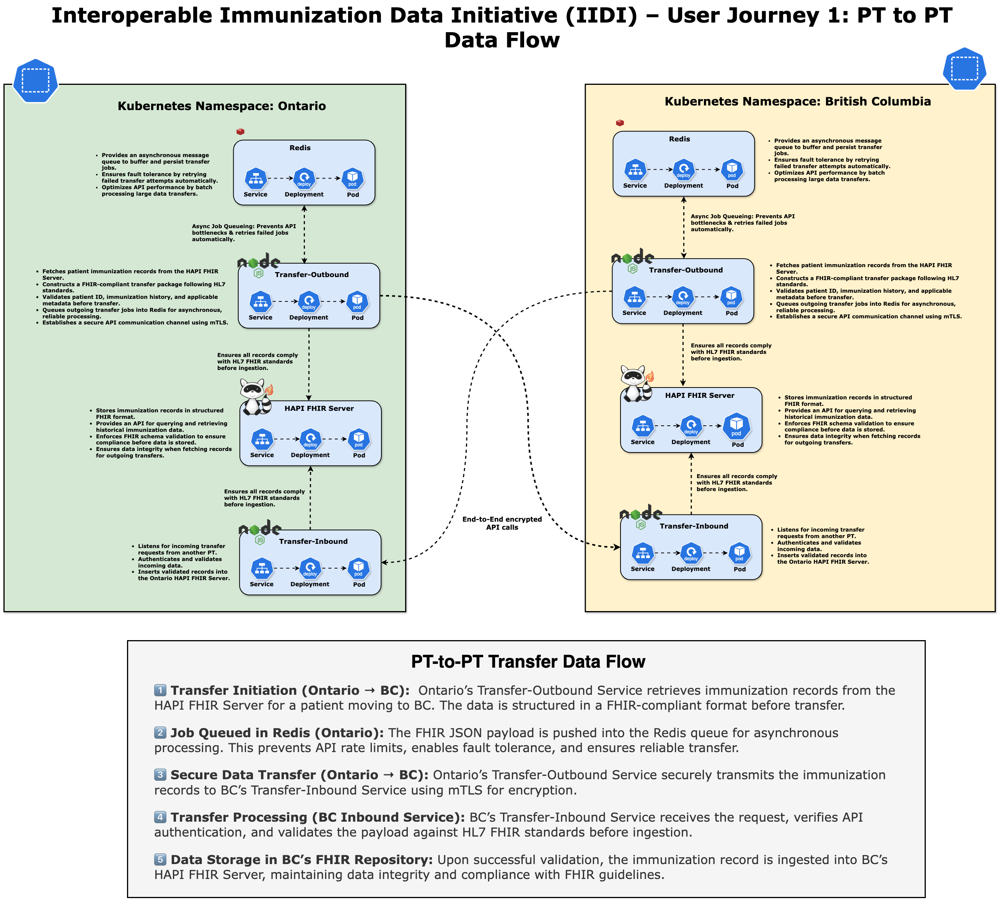

Interoperable Immunization Data Initiative (IIDI) – User Journey 1: PT-to-PT Transfer
Technical Architecture and Implementation for Secure Cross-Provincial Data Exchange
1. Introduction
The Interoperable Immunization Data Initiative (IIDI) is designed to facilitate a secure, standards-based, and interoperable approach for immunization record exchange across Provincial and Territorial (PT) jurisdictions in Canada. As part of this initiative, User Journey 1 focuses on the technical implementation of PT-to-PT transfers, ensuring a scalable, Kubernetes-native solution that aligns with modern security, compliance, and interoperability best practices.
This document provides a comprehensive technical breakdown of the PT-to-PT immunization data exchange, covering system architecture, data flow, security measures, and infrastructure details. It is important to emphasize that this document strictly focuses on the technical aspects of the transfer. Governance, consent frameworks, and policy considerations are explicitly out of scope at this stage, as the assumption is that PTs will handle out-of-band consent and authorization mechanisms prior to initiating a transfer.
The technical model assumes a push-based transfer mechanism where the originating PT (data owner) initiates the record transmission only after an external approval process. The system is designed with privacy, security, and reliability in mind, utilizing industry-standard protocols such as FHIR (Fast Healthcare Interoperability Resources), OAuth2, mTLS encryption, and Kubernetes-native deployments.
2. System Architecture
The PT-to-PT transfer mechanism is built on a decentralized, API-driven architecture where each PT maintains its own independent namespace within a Kubernetes cluster while adhering to a standardized data exchange model. The architecture is designed to be scalable, secure, and easily extendable, allowing additional provinces to onboard without requiring modifications to the existing infrastructure.
Each PT namespace is deployed on Google Kubernetes Engine (GKE) and managed using GitOps best practices through FluxCD and Kustomize. This ensures a declarative, auditable, and version-controlled infrastructure while maintaining a consistent deployment pipeline across multiple jurisdictions.
The core architectural components of the PT-to-PT transfer model include the following:
PT-Specific Components (Ontario, British Columbia, etc.)
Each PT namespace consists of the following services, which collectively manage immunization data storage, retrieval, and secure transmission:
- HAPI FHIR Server: A FHIR-compliant immunization data repository that serves as the authoritative source for immunization records in each PT.
- CloudNativePG (CNPG) Database: A high-availability PostgreSQL-based persistence layer, deployed as a Kubernetes-native managed service to store immunization records securely.
- Redis Cache: A high-performance message queue and caching layer, enabling asynchronous job execution for queued transfer requests, ensuring reliable record transmission.
- Transfer Services (Outbound and Inbound): Microservices responsible for initiating, processing, and validating data transfers, ensuring compliance with FHIR schema and security policies.
Secure PT-to-PT Data Exchange Layer
To facilitate inter-provincial immunization data exchange, the system relies on a highly secure, API-based transfer model that incorporates:
- FHIR RESTful APIs for structured immunization record retrieval and transmission.
- FHIR Bulk Data APIs for high-volume data exchange, ensuring minimal latency and optimized resource consumption.
- Asynchronous Processing via Redis to queue and handle transfer requests without blocking system resources.
- Encryption with mTLS to prevent unauthorized access and data interception.
Each PT operates independently, but standardized interfaces and shared security models ensure seamless interoperability.
3. PT-to-PT Data Transfer Process
3.1 Transfer Workflow
The PT-to-PT data transfer process follows a structured, stepwise approach to ensure data consistency, security, and regulatory compliance while maintaining operational efficiency.
- Initiating the Transfer: When a patient moves or requires immunization records in another jurisdiction, the receiving PT requests the immunization history from the originating PT through an external, policy-driven process.
- Outbound Transfer Service Execution: The originating PT validates the transfer request, retrieves the relevant immunization records from the HAPI FHIR Server, and structures the data for secure transmission.
- Secure Data Transmission: The data is queued in Redis, encrypted using mTLS, and transmitted to the receiving PT’s Inbound Transfer Service.
- Data Validation and Ingestion: The receiving PT validates the incoming data, ensuring compliance with FHIR schema and security policies before persisting it in its local FHIR server.
- Acknowledgment and Completion: Upon successful ingestion, the receiving PT confirms receipt of the data, completing the transfer.
4. Technical Implementation
4.1 Outbound Transfer Service
The Outbound Transfer Service acts as the initiator of data transfers and is responsible for:
- Retrieving the required immunization records from the local FHIR repository.
- Validating the transfer request against API security policies.
- Queuing requests in Redis for optimized handling.
- Establishing a secure connection with the destination PT via mutual TLS.
- Encrypting and transmitting the data using the FHIR Bulk Data API.
4.2 Inbound Transfer Service
The Inbound Transfer Service is responsible for handling incoming immunization records securely and efficiently. It:
- Validates the structure and content of the received immunization data.
- Persists the records in the local FHIR server, ensuring adherence to schema constraints.
4.3 Redis as a Message Queue
To ensure scalability and reliability, Redis is used for:
- Managing high-throughput transfer requests efficiently.
- Providing a fault-tolerant mechanism to handle transfer retries.
- Ensuring zero data loss by acting as an intermediate buffer before final persistence.
5. Security and Compliance Considerations
Security is a core principle of this design, ensuring that immunization data remains protected during PT-to-PT transfers. The system implements:
- End-to-End Encryption: All communications between PTs leverage mTLS for encryption and authentication.
- Role-Based Access Control (RBAC): Enforces strict least-privilege access for system components.
- Comprehensive Audit Logging: Every request and response is logged for compliance and forensic analysis.
- Secure Kubernetes Workloads: All services run in isolated namespaces, ensuring multi-tenancy security best practices.
